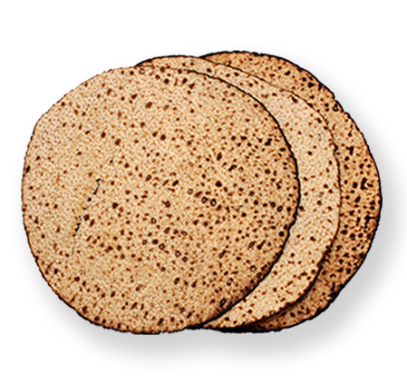
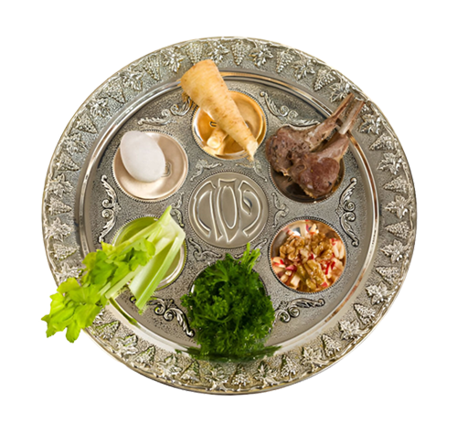

Handmade Matzah (No dough required)

This Passover, Jew it up with a free premium handmade matzah – compliments of Chabad-Lubavitch.
This matzah isn’t just any cracker. It reconnects us to our
ancestors' hurried escape from Egypt – carrying with it the
spiritual energy of faith, freedom, hope and redemption.
So be sure to eat THIS matzah at the Seder!
(Just try to keep the crumbs under control.)
Contact your local Chabad-Lubavitch center to receive your free handmade matzah.
Find your local Chabad-Lubavitch Center
A Well-Rounded Seder

This Passover, let’s Jew it up at your local Chabad-Lubavitch Community Seder!
We’ll explore timely traditions, ask insightful questions, eat hand-made matzah, and enjoy a delicious meal.
Together we will celebrate our freedom with greater joy, spiritual meaning, and inspiration than ever before.
This year, Elijah isn't the only one invited to our seder.
So are you.
Find your local Seder